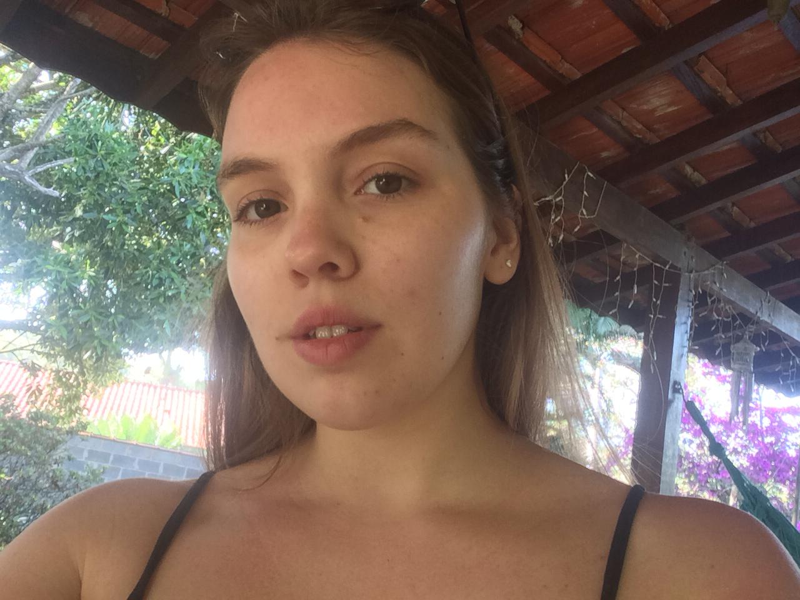

Eu me chamo Júlia, prazer em recebe-lo aqui onde poderá me conhecer melhor.
Tirei essa foto em um dos lugares que mais gosto, no interior em um dia de calor, duas coisas que amo juntas (sol e natureza).

Nesse áudio apresento pra vocês apenas o som da minha voz, para que a conheçam.
O vídeo é minha apresentação de uma vídeo aula que gravei para a disciplina TICE, mas o vídeo deu errado então fiquem apenas com essa parte:
A Vídeo aula pronta você encontra em https://www.youtube.com/watch?v=YKCLhXnbtg8&t=6s
No artigo WHITE, A., Understanding hypertext cognition: Developing mental models to aid users’ comprehension , o autor fala uma coisa muito interessante sobre a leitura, onde diz que a leitura acaba sendo uma prática tanto oral quanto pública. Diz também sobre os perigos do hypertexto.
Em DIAS, P., Hipertexto, hipermédia e media do conhecimento: representação distribuída e aprendizagens flexíveis e colaborativas na Web ele aborda os temas de hipermidias e hipertextos na educação. Nele aborda o tema de como essas coisas acabam influenciando na educação e na abordagem educacional interativa. Nele diz também que a mídia influencia bastante no conhecimento do indivíduo e no seu acesso às informações. Sobre o hipertexto ele fala sobre a representação flexível e na ligação entre diferentes tipos de informação, sobre hipertextos comunitários e sobre a flexibilização da educação com esses meios em mãos.
Em SNYDER, I., Antes, Agora, Adiante: Hipertexto, Letramento e Mudança ele faz uma relação sobre a tecnologia e o letramento, sobre o livro físico e sobre a interdiciplinariedade necessária para a interpretação de textos na atualidade devido a multimodalidade.
Em LANDOW, G. P., Hypertext in Literary Education, Criticism, and Scholarship ele fala sobre como o hipertexto incorpora a abertura textual e que permite que as pessoas desenvolvam conhecimento de uma forma não linear, não sequencial e associativa que os textos lineares não fazem.
Já em BURBULES, N. C., Rethinking the Virtual ele fala um pouco sobre a realidade virtual e sobre como ela nos influencia.
Penso que Snyder tenha colocado um grande assunto em pauta, devido a introdução da tecnologia na vida das pessoas, algumas desde muito novas, aliás, quantas crianças pequenas que não vemos mexendo direitinho em aparelhos tecnológicos, até melhor que nós. Então relacionar esse tema com o letramento, a leitura e as mudanças que isso causa é muito sábio e pertinente. A incorporação dessas tecnologias nas escolas e em salas de aula vem acontecendo, o que reforça a necessidade da discussão sobre o tema.Outra coisa importante que ele diz é sore o livro físico e sua presença no mundo atual, tanto na forma de textos literários quanto na forma de livros educativos e apostilas escolares. A presença dessa forma física também vem diminuindo ao longo do tempo, como podemos notar que até grandes livrarias antigas andaram pedindo falência, devido ao abandono do livro físico pela população.
Por enquanto é isso. Espero que tenha gostado!
A IA está presente na minha rotina, não só devido ao meu acesso à internet, mas na maioria das coisas que eu acabo fazendo durante um dia.
Ela está presente quando eu faço uma pesquisa na internet sobre um CID (código usado na medicina para doenças e procedimentos), quando eu uso uma rede social (como meu instagram) ...
A Inteligência Artificial acaba por estar tão inserida na nossa rotina que as vezes pode até passar despercebida, como nas pesquisas do google que fazemos diariamente, no email que utilizamos para o nosso trabalho, no jogo que jogamos online, em praticamente tudo mesmo! E isso as vezes pode levar a uma falta de privacidade nossa e até a uma manipulação por parte das empresas que tem os nossos dados, já que muitas vezes eles acabam sendo vendidos pra quem tem interesse.
Sendo assim, espero que tenham gostado do exposto e até uma próxima!
Oi gente! Venho aqui apresentar pra vocês uma parte da musica “Oi- Lagum” cantada por mim de forma acústica! Tínhamos que trabalhar com a ideia de que o canto em voz alta ajuda no nosso desenvolvimento, então pensei em fazer um pouco diferente e gravar apenas com o som da minha voz, sem a ajuda de instrumentais, espero que gostem!
Vim me auto avaliar um pouco aqui.
Auto Avaliação da VAI Eu acho que na minha VAI faltou uma avaliação mais efetiva, talvez eu pudesse ter pensado em algo que envolvesse mais os alunos e incentivasse eles a interagirem com essa avaliação final da aula. Pensei que poderia ter usado aquele quizziz ou kahoot para fazer um quiz interativo com eles. Ou ate criado um forms normal para que respondessem rapidinho.
Visto que eu estava com a boca operada do siso eu até que falei bem no vídeo, o que me surpreendeu, mas em circunstâncias normais eu poderia ter sido mais interativa, ter falado de forma a prender mais os alunos. Poderia ter gesticulado mais e até explicado de forma mais clara (a dor não deixou eu falar do jeito que queria).
Talvez eu também pudesse ter colocado mais algumas imagens na minha vídeo aula, de modo a exemplificar mais algumas coisas, como fotos do manguezal e do pantanal e suas queimadas. Acho que numa primeira avaliação é isso, eu achei boa a minha escolha do tema e do que falei dentro dele, e o resto que avaliei acima.
Até a próxima!
.
.